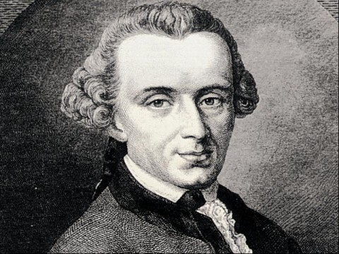

- Nietzsche
- Kant
- Marx
Kant
Kant Immanuel Kant was an influential German philosopher. In his doctrine of transcendental idealism, he argued that space, time and causation are mere sensibilities; "things-in-themselves" exist, but their nature is unknowable.
In his view, the mind shapes and structures experience, with all human experience sharing certain structural features.
In one of Kant's major works, the Critique of Pure Reason

he attempted to explain the relationship between reason and human experience and to move beyond the failures of traditional philosophy and metaphysics.